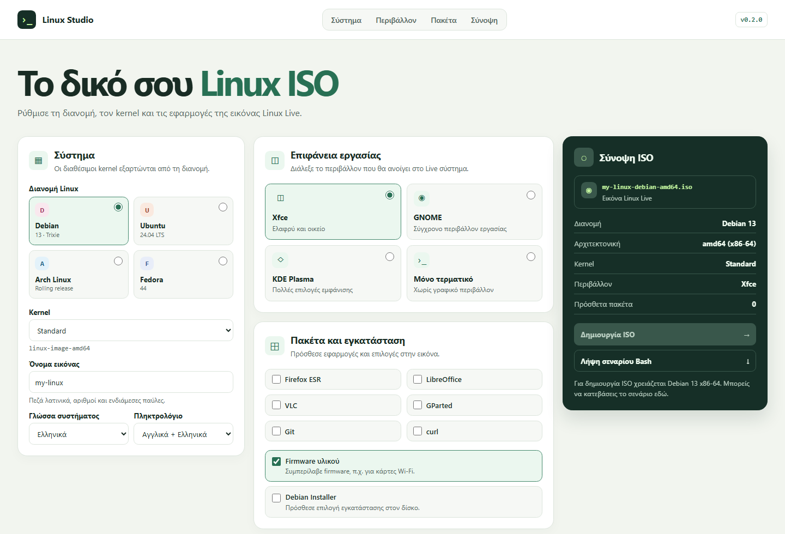

Linux Studio 0.2.0
Το Linux σου,
σε δικό σου ISO.
Διάλεξε διανομή, kernel, γραφικό περιβάλλον και εφαρμογές. Κράτησε τις επιλογές σου σε μια εικόνα Linux Live για x86‑64.
Λήψη για Windows Χρήση σε Linux
Τέσσερις διανομές.
Εσύ διαλέγεις.
Κάθε διανομή προσφέρει τις δικές της παραλλαγές kernel και επιλογές για το Live σύστημα.
- Debian 13
- Standard · Real-time
- Ubuntu 24.04 LTS
- Generic · HWE · Low-latency
- Arch Linux
- Standard · LTS · Zen · Hardened
- Fedora 44
- Standard · Debug
Από τη ρύθμιση
στην εκκίνηση.
Οδηγίες στο GitHub
Ρύθμισε την εικόνα
Άνοιξε την εφαρμογή σε Windows ή Linux και διάλεξε τη διανομή, τον kernel και τα πακέτα σου.
Δημιούργησε το ISO σε Linux
Τρέξε την εφαρμογή στο αντίστοιχο Linux ή χρησιμοποίησε εκεί το σενάριο Bash που εξήγαγες από τα Windows.
Δοκίμασε την εκκίνηση
Άνοιξε το ISO σε εικονική μηχανή. Εκκρεμούν οι δοκιμές εκκίνησης για κάθε διανομή.